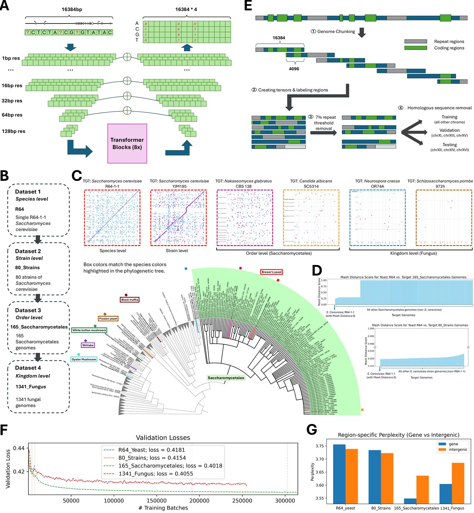
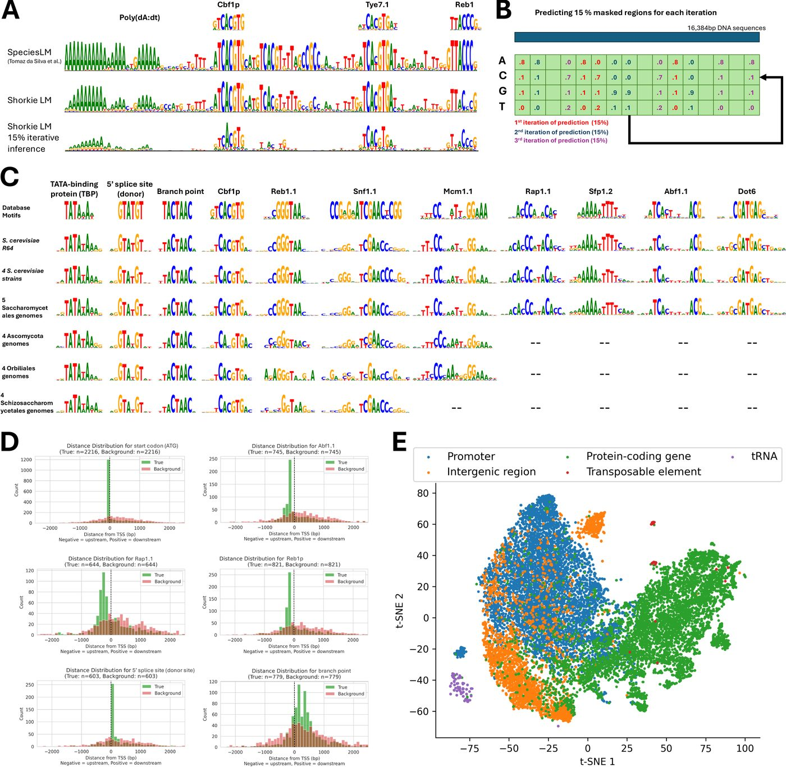
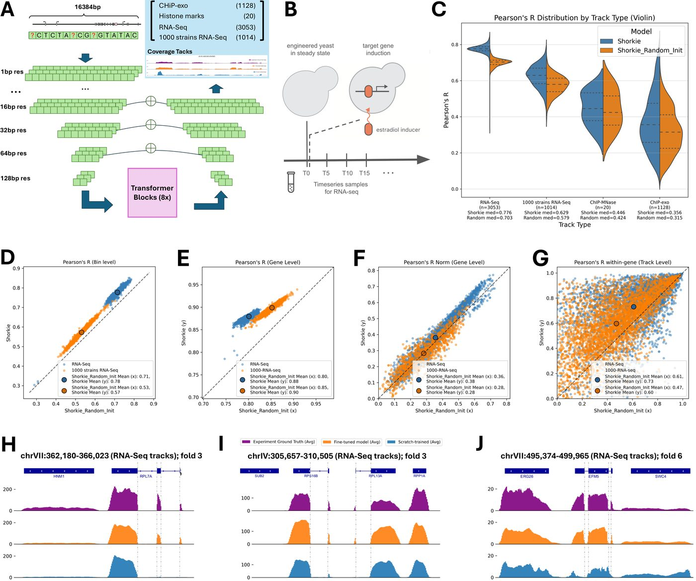
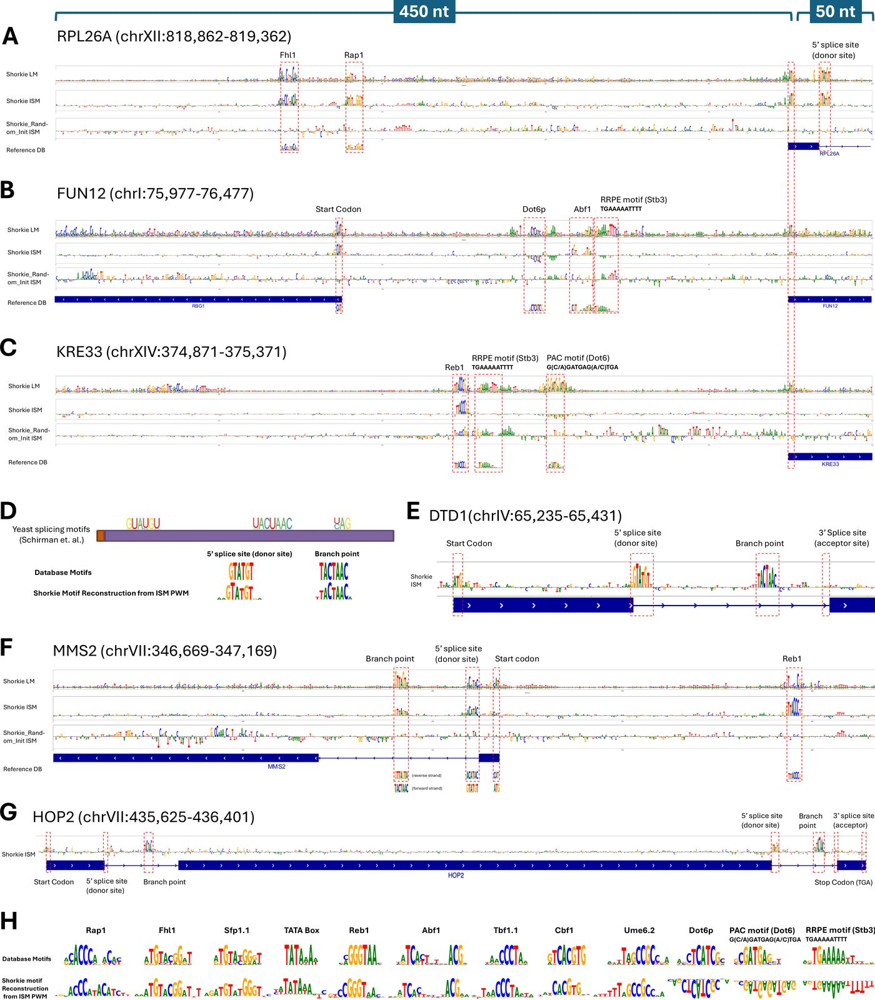
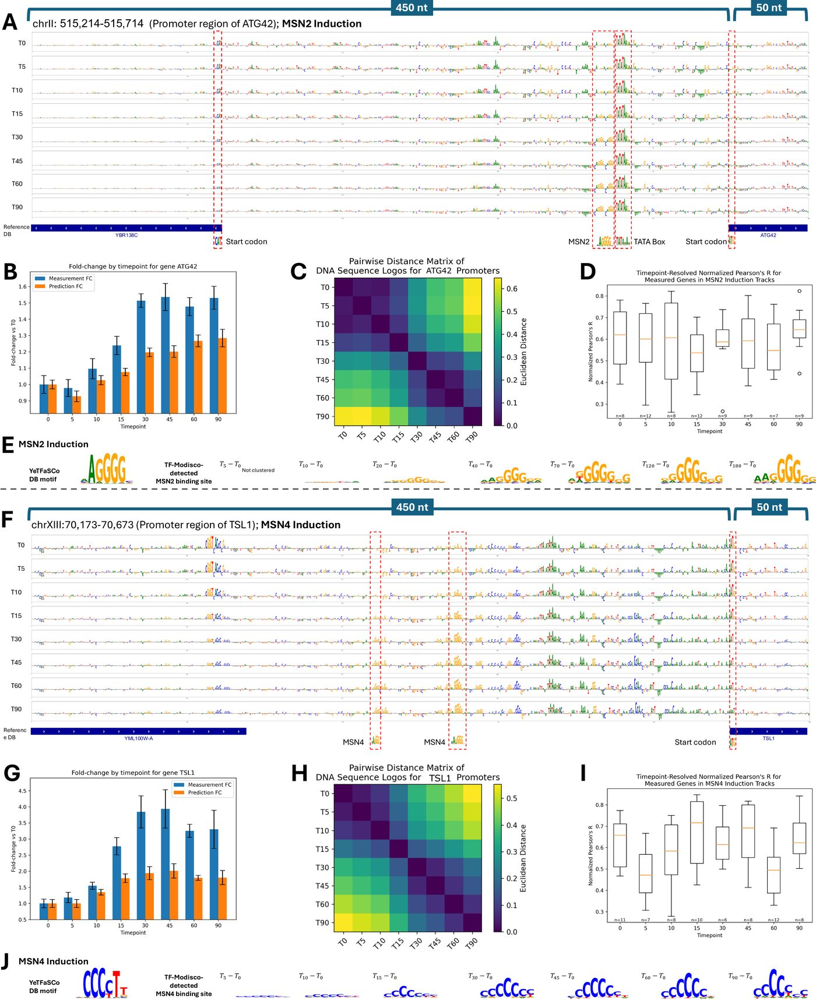
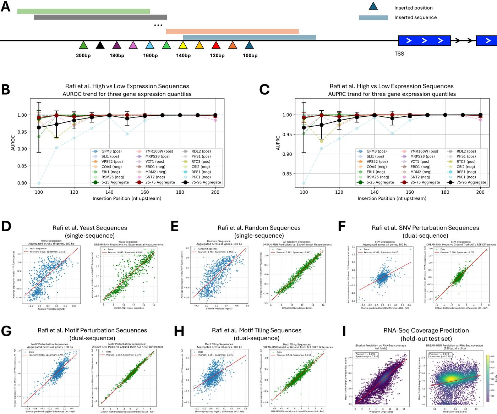
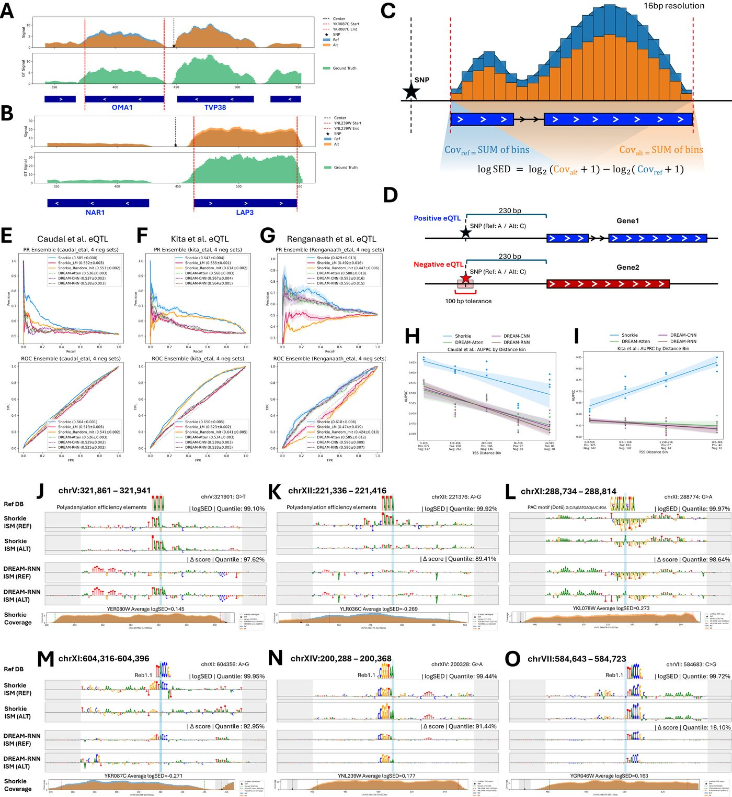

Analysis gallery¶
What Shorkie can do, one figure at a time. Each panel below is the published figure from the paper; the notebook beside it regenerates that figure and checks the regenerated numbers against the published ones.
Every notebook is executed and committed with its outputs, so you can read the whole analysis — code, numbers and plots — without running anything. Click Notebook to read it on GitHub, or nbviewer if GitHub’s renderer is being slow.
Note
The verification counts are not “the picture looks similar”. Each figure ships a
reproduced/verify_figNN.csv comparing published against regenerated values at
rtol=0.02. Across all seven figures that is 206 of 206 checks passing —
see Reproducing the paper figures.
Figure 1 — The fungal corpus and the model¶
{kind=link}

How the four pretraining corpora were built and how they relate phylogenetically — the species tree, genome-to-genome alignment dotplots, Mash distances between assemblies, and the language model’s validation loss and perplexity as pretraining proceeds. This is the “what did the model actually read” figure.
Figure 2 — What the language model learned¶
{kind=link}

Motifs recovered from Shorkie_LM with TF-MoDISco — without ever being shown a motif database. Includes the SMT3 promoter logo, the distribution of discovered motifs relative to transcription start sites (they concentrate near TSSs, as real regulatory elements should), and a t-SNE of the model’s attention embeddings.
Figure 3 — Predicting RNA-seq coverage¶
{kind=link}

The core supervised result, and the cleanest statement of what pretraining bought: Shorkie vs Shorkie_Random_Init across scales, from genome-wide correlation down to individual gene loci. Gene-level RNA-seq Pearson R has a median of 0.771 for Shorkie against 0.627 for the identically-trained model that started from random weights.
Figure 4 — Promoter and splicing motifs¶
{kind=link}

In-silico mutagenesis over ribosomal-protein and TSS-proximal windows, rendered as per-base saliency logos. Mutating a base and measuring the predicted change recovers recognisable promoter grammar and splice signals — evidence the model is keyed on real regulatory sequence rather than position.
Figure 5 — Dynamic induction time courses¶
{kind=link}

The “dynamic” in the title. Predicted versus measured expression across a transcription-factor induction time course (MSN2/MSN4), including ISM at the ATG42 locus. Shorkie tracks how expression changes over time after induction, not just a static steady-state level.
Figure 6 — MPRA variant effects¶
{kind=link}

Shorkie scored against the Random Promoter DREAM Challenge MPRA — 71,103 held-out promoters spanning native sequences, random oligos, high- and low-expression designs, “challenging” sequences, and SNV/motif perturbations — compared with the DREAM-RNN baseline. Reproduces entirely on CPU from released data.
Figure 7 — cis-eQTL variant effects¶
{kind=link}

The variant-effect benchmark on real natural variation: 1,901 eQTLs from Caudal
et al., 683 from Kita et al., and 142 MPRA-validated core-promoter variants from
Renganaath et al., each against matched negative sets, plus ISM saliency at
individual eQTLs. This is the figure behind the logSED metric you get from
Using Shorkie. Reproduces on CPU from released data.
Running them yourself¶
Figures 6 and 7 run end to end on CPU from released data:
data/download.sh --eqtl -u <your-gcp-project>
data/download.sh --mpra all -u <your-gcp-project>
jupyter lab notebooks/
The others need a gated intermediate produced by the cited scripts/ stage. See
Reproducing the paper figures for what each notebook requires, and Datasets
for how to obtain it.
Looking for usage examples rather than paper figures? The four short examples/ notebooks cover loading, inference and variant scoring — see Using Shorkie and Using Shorkie_LM.